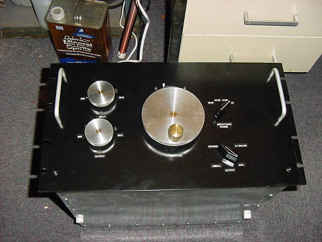
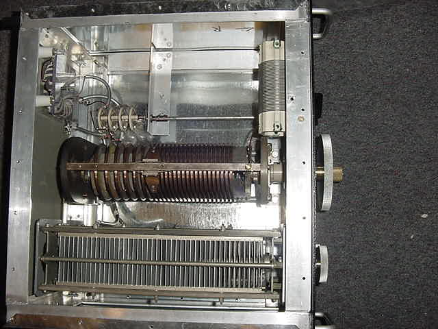

| 
Construction of a homebrew, high power antenna tuner:MOSTLY BUILT FROM JUNK!
Seen here are the basic views of the tuner: Front panel and overall internals. Details will be linked in the text below.
The intent in building this tuner was to cover the very low end of the amateur spectrum 160-40 and not run out of Inductance, Capacitance, or power handling
regardless of the load thrown at it. I am glad to announce that it acheives those goals. In fact, it tunes well into the top of the broadcast band and
up as high as twenty meters. As for power handling I can't determine its limits with my available gear.
Particulars:
T match (currently, I'll explain later)
Inductance Range: 0 (almost) to 57uH
Capacitance: 60 - 750 pF (each)
Electrical Construction:
All components were parts that I'd saved over the years for this purpose.
The main inductor is a 0- 22uH Johnson variable removed from a 25 KW transmitter. It's massive! The lower end of the coil is wound from 1/2" x 3/16" copper with the very edge thinned to 1/8" to accomodate the slider. The upper range continues with 1/8" x 1/4" copper bar.
The entire insulating structure seems to be made of soapstone. The slider brushes are solid silver. I replaced the copper follower between the sliders with
delrin as the copper tended to shave the coil windings a bit. Follower
The tuning caps are Cardwells obtained from the same source as the inductor but have never been in service. They are rated at 4500 volts plate spacing.
Caps
The auxiliary inductor switch adds inductance to the "cold" end of the main inductor in three steps adding 14, 23 & 35uH respectively,
permitting 4 overlapping ranges.Inductance Switch
The Mode switch came from I don't know where but had excellent spacing for isolation so in it went, almmost all wiring was done with RG-8X grounding the shield at
one end only to provide electrostatic sheilding. RF leakage to/from unused ports seems extremely low unlike most tuners I've used in the past.
How low? I dunno, I'll have to measure it sometime, but trust me, it's low. Mode Switch
A 4:1 balun was put in to provide a balanced output. It probably would be more practical to make is a 1:1 seeing how most antennas,
regardless of feedline, are 50 to 100 ohms, but 200 ohms seemed as reasonable a mistmatch as any other. It can be changed. It's wound with 14 gauge Formvar
coated wire, wrapped with cotton. The balun is classic tranmission line type wound on a massive Q1 ferrite core. If your not familiar with the difference between
a tranmssion line transformer and the common iron core tranformers you should be. The core of this transformer only serves to impede the flow of unbalanced currents,
therefore, it does not develop any more than a minute magnetizing current for operation into reasonably balanced loads. A core of this size will never saturate
at amateur (plus) power even if operated into an infinitely unbalanced load. Balun
RF Isolation/Insulation:
The entire RF assembly is isolated from the chassis by mounting to solid 1" square lexan bar running across the fron and rear of the chassis.
Most pictures show this from various views.
The Inductor is insulated from the tuning assembly by a delrin shaft and hub which also serves as the mount for the turns coutner drive wheel
The Capacitor shafts are isolated through ceramic/metal flex drives as well as phenolic shafts between the reduction drives and flex couplings
And finally. The Schematic
Mechanical Construction:
The entire chassis is 1.25" brazed aluminum. It was my first attempt at using aluminum brazing rod and I was pleasantly surprised at how well it worked.
It requires a lot of judiciously applied heat (oxy/acetylene), not much below the aluminum's melting point, but works great. I used Alladin's aluma braze.
The knobs were machine from 1/2" aluminum plate used for structural machine work. I don't know the alloy # but I can tell you it machined more like brass
than aluminum. The hubs and main tuning handle were machined from Tobin Bronze, prevoiusly salavged from old marine propeller shafts. The knurled tuning
handle turns freely about a fixed shaft on the face of the knob. You'd have to see it, it's pretty slick. Knob
The turns counter was a little tricky. I used a conventional counter like you might find in a tape deck (remember tape?). But since the inductor had 25-1/2
turns end to end that number didn't seem to mean much. So I machined some new pulleys to yeild a 6:1 turns ratio so the counter now reads 0 - 100 for 25-1/2 turns.
or roughly percent inductance. It can also be reset to 0 anywhere in it's travel for relative readings and "return to" settings. Counter Drive
Saving the best for last, although really not well illustrated here, are the ball reduction drives for the capacitors. The were made from the Tobin Bronze
use for the knobs, some 1/16" brass plate from a previous UHF receiver project, 1/4" ball bearings from a bicycle hub, and some 1/4 stainless rod I had laying around.
Since the photos don't show well I've included some of my "engineering" sketches here. I found that getting the force angles and diametral relationships for
reliable torque and smoothness quite a challenge. Making the pointers that indicate the reduced drive position was "fun" too. I've since developed some technigues that
result in very predictable outcomes. Drive unit mounted Reduction drive sketches
Reduction drive geometry
Complete details on building reduction drive
Final Notes:
The entire enclosure is covered in simple tinned steel used in ductwork. The edges are folded over for 1/2" and the iron content in the metal provides excellent
elctromagnetic sheilding. Not quite mu metal, but a good second for the price.
As I said I would explain later, this is currently a T match. This is easily the most versatile tuner given most components available. But, since a T-match
functions well as a high pass filter it does little to attenuate undesired harmonics and noise above the band. Normally, a Pi network would result in a more
desirable passband (low pass filter) and possibly a quieter receive and certainly attenuate any harmonics from the tranmitter. Unfortunately, Pi network yuner
tend to require very large capacitors to achieve low impedance matching which is why most manufacturers don't offer them. Since I have a lot of capacitance
available I plan on making a reversable plate on this tuner which will switch it from T to Pi. This can also be done with a big multi element bandswitch but I
don't have one of those and think the plate will be neater. Basically, the coil terminations, capacitor terminations, inputs, outputs and ground comprise a toal of
six points that need to be connected in 3 pairs for a Pi network. Swapping the connections for T requires a simple swap of two pairs of connections and the third
left open. The mechanicals are already neatly worked out and I'll post it all when I'm done.
I hope you found this interesting, informative and most of all inspiring to build your own project from the junque box.
Copyright 2007 M.W. Sedutto
|
Back to Main Page